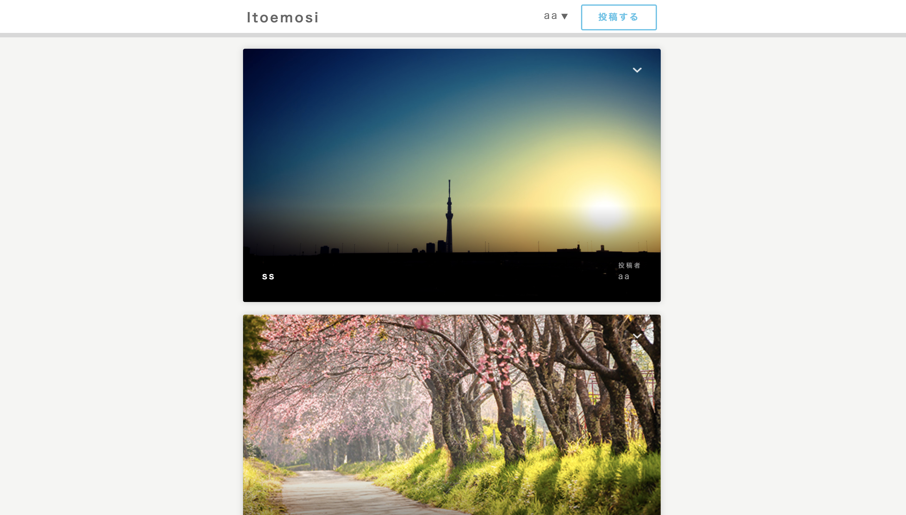

田中のポートフォリオ

どじょっこ田中農園
- 島根県安来市にある梨農場のサイトです。
- 二十世紀梨は青梨の代表品種！
- 酸味と甘さのバランスのとれた爽やかな味で、
- シャキシャキとした食感が特徴です。
- 販売時期は8月下旬〜10月頃

いとエモし
- 家にいながらエモい画像や写真を
- お互いが投稿し合う事を目的としたサイト
- マイページ、編集、削除、コメント機能など
- 基本的な物が揃っている自作テストアプリ。
- 気に入った写真があれば、
- 写真の右上にある矢印をクリックして
- 写真詳細画面へ
- お気に入りやコメントなどができます。
- 写真は他のサイトに上がっている物を
- URLで貼り付けてもいいし
- 画像をドロップしても表示できます。

chat-space
- コミュニケーションに「抜け」がなくなる！
- 登録した相手との1対1のテキストチャット
- 登録した複数の人たちとのグループチャット
- 画像の投稿などが出来る
- 新規チャットルーム作成画面です
- 名前の横のえんぴつマークから入れます。
- ルームの名前を付けて、招待したい人の名前を入力
- 登録する、でチャットルームが作成されます。
- コメントはもちろんの事
- チャット欄のアイコンをクリックすれば
- 画像なども投稿できます。
- サーバーとの同期は９秒に一回です
FURIMA
- フリーマーケットのテストサイト
- 商品の出品、クレジットカードを登録しての商品購買、コメント機能
- マイページ、商品詳細表示、カテゴリ機能
- 商品情報編集、商品削除、
- 登録した商品の新しい順にフロントに表示されます。